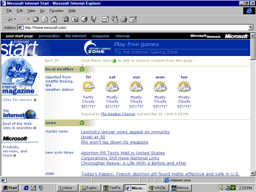
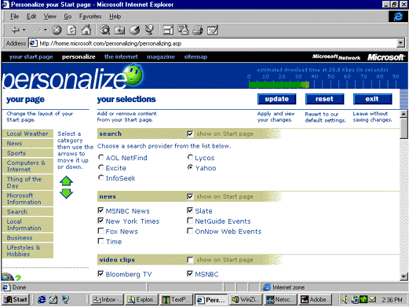

|
| ||
|
| ||
Nancy Winnick Cluts
Developer Technology Engineer
Microsoft Corporation
April 30, 1998
Contents
Introduction
Personalization in Action
Summary
Editor's Note: This article is one of three on technologies used by the Internet Start site. You'll also want to read Getting Content from the Web to the Client and Got Any Cache?.
In addition, be sure to read about the Personalization and Membership  feature of Site Server 3.0, which was recently released.
feature of Site Server 3.0, which was recently released.
Pssst. Have you checked out the Internet Start site (http://home.microsoft.com  ) lately? The site has been entirely revamped to provide the ultimate in Web site personalization. When you go to the site, you can choose from a myriad of options to get the content that you find most useful and interesting. The first time you enter the site, you will get the default options and see
something like this (of course, the news headlines will be different):
) lately? The site has been entirely revamped to provide the ultimate in Web site personalization. When you go to the site, you can choose from a myriad of options to get the content that you find most useful and interesting. The first time you enter the site, you will get the default options and see
something like this (of course, the news headlines will be different):

Figure 1. Your Start page (the Internet Start site home page)
If you are running Internet Explorer 4.0 or later, you can personalize the page in place by clicking one of the smiling green faces (don't be frightened -- it's not Mr. Yuck), or you can go to the Personalize page and click "personalize" in the black toolbar at the top of the screen.
On the Personalize page, you can click any of the check boxes to select or clear items and you can fill in the edit fields with appropriate information (stock symbols, zip code, URLs, and so forth). The gauge at the top right of the screen estimates the download time for your Start page given the selections you make. If you make a mistake, don't worry -- you can always revert to the default selections by clicking the Reset button.

Figure 2. The Personalize page
If you create a Web site without personalization, all visitors to the Web site will see exactly the same content, regardless of their interests. This can be easier on those who create and maintain the Web site, because it allows the Web site developer to concentrate on creating or acquiring high-quality content on a wide range of topics. One problem with this approach is that not everyone has the same interests, so there's bound to be areas that someone won't like. Let's say that I have a particularly slow connection and I don't want the overhead of lots of content. If the default setting provides lots of content that I don't find useful, I will avoid that site. On the flip side, I may have a very high-speed connection and don't want to spend my time navigating from link to link to get stock quotes, baseball scores, local weather, and the top news stories of the day. I would rather get all of that information on one page. In this case, the default setting would not be adequate -- one Web site would have to provide my local weather and the weather for the entire world (remember, the Web is worldwide -- not just for the United States). Here again, I would not bother visiting the default Web site.
The answer to this thorny problem lies in personalization. By providing personalization, you will have a greater ability to give people what they want and they will visit your site more often.
The principal goals when implementing the design for the new Internet Start site were:
Significant speed optimizations were necessary for the Internet Start site, because this site requires multiple servers to deliver the number of page requests it gets. Normal database implementations were out of the question -- it proved to be too slow to have every page request on every server accessing the same remote database to build the page.
The site needed to be data-driven, but the data had to reside in memory on each server, with updates occurring as often as necessary to keep the data up-to-date. The methods employed to gain speed were:
The Internet Start page is really a wrapper around content that is acquired both internally (within Microsoft) and externally. This shell is created independently of the content that is generated. As such, it needs to be flexible enough to add and remove content sources on-the-fly. The shell is defined by a set of application-scope dictionary objects. These are server components that are declared in the global.asa file, which makes them global to the site, and thus available to every ASP page on the site.
The actual content for the site is loaded once an hour (or in the case of event content, once every 15 minutes) into still other global dictionary objects. This speeds up the drawing of customized pages, because no components with dependencies or file I/O are used during the drawing of the page. The exception to this schedule is the Microsoft Investor Object, which is used only when a user has selected a stock symbol that is not among the 1000 most common stock quotes (which are cached every 15 minutes).
DHTML was used to enable Internet Explorer 4.0 users to add and remove content sources on the page. If you are not running Internet Explorer 4.0, use the Personalize page (Figure 2) to change the settings.
Note If you have cookies turned off, you will see the default page and will be unable to take advantage of personalization.
Now that you've got an idea of the general methods used to provide personalization for the Internet Start site, let's look at some of the cool features that were added.
The Internet Start site is intended to run worldwide. As a result, visitors can specify their time zone to have the time displayed accurately on their system. First-time users of Internet Explorer are taken to a page that enables them to select from the different time zones. This information is passed to the Internet Start site via a query string and stored in a cookie. This time-zone information is then used to adjust event times. The Internet Start site also supports displaying time in either 12-hour (EN or EN-US locales) or 24-hour time.
To provide the user with a view of her local weather, the Internet Start site uses the zip code information that the user entered or their city (from a list of international cities). This information is mapped to a city code and stored in a cookie. This code is subsequently used to look up the current weather information in a dictionary object. The information is returned in a comma-delimited string signifying the GIF file to use (a picture of rain drops is what you usually see for Seattle), the high and low temperatures for each day, and the text describing the conditions for each day.
Internet Explorer 4.0 users can add or remove content sources on-the-fly (that is, without retrieving the entire page from the server again and without visiting the Personalize page again). Adding content is done by making use of a hidden floating frame into which an ASP document is loaded. This document accesses the dictionary object on the server containing the news stories. The ASP document then plots inside the hidden floating frame and fires its onLoad event. This event fires a client-side script in the hidden document that copies the news stories in question into an empty <SPAN> element on the Internet Start site. Because we're using DHTML, the news stories suddenly appear "in place" on the Internet Start site home page, causing the remaining content to slide down to make room.
Removing content is accomplished by using DHTML to set the Display property of the <SPAN> object to none. Content can also be reordered via a drop-down list, but the Internet Start home page must be refreshed to reflect this change.
The Internet Start site relies heavily on the use of cookies. ASP provides extensive cookie-handling functionality on the server, but because the cookies need to be accessed on the client as well, the development team created JavaScript™ routines to duplicate the ASP functionality on the client. ASP cookies can have a multilevel format where the value of a single cookie contains multiple name=value pairs, which adds an extra level of complexity to typical cookie handling. As luck would have it, there was already some code freely available on the Internet for basic cookie handling. The development team then adapted the code for use on the Internet Start site, including making it compatible with all the browsers and operating systems the site is designed to support. Then they added the functions necessary to handle the multilevel cookies that ASP creates. The cookies are retrieved into associative arrays on the client to simplify reading and changing values. This code has been thoroughly tested on multiple browsers and operating systems. Want to see it?
//Tip: If you use these functions, special characters in cookie values should
//generally be encoded, but be careful not to encode the characters ASP uses as
//delimiters (equals signs and ampersands) if you want to be able to access the
//cookies using ASP.
var WholeCookie = document.cookie;
var today = new Date();
var expiration = new Date(today.getTime() + 365 * 24 * 60 * 60 * 1000); // 365 days from today
// **** COOKIE FUNCTIONS ****
// Adapted from Original JavaScript code by Duncan Crombie: dcrombie@ozemail.com.au
// depends on WholeCookie variable set above
function getCookie(CookieName) {
var index = WholeCookie.indexOf(CookieName + "=");
if (index == -1) return "";
index = WholeCookie.indexOf("=", index) + 1;
var endstr = WholeCookie.indexOf(";", index);
if (endstr == -1) endstr = WholeCookie.length;
var IndividualCookie = unescape(WholeCookie.substring(index, endstr));
// check for empty cookie. Various browsers handle empty cookies differently.
if (IndividualCookie == null || IndividualCookie == "null" ||
IndividualCookie == "" || IndividualCookie.indexOf("undefined") >= 0 ||
IndividualCookie.lastIndexOf("=") == IndividualCookie.length - 1) {
IndividualCookie = ""
}
return IndividualCookie
}
// writes a permanent cookie (expires=) with global scope (path=/)
// depends on today and expiration variables set above
function setCookie(CookieName, PropertyString) {
document.cookie = CookieName + "=" + PropertyString + "; path=/; expires=" +
expiration.toGMTString();
WholeCookie = document.cookie; // keep the internal cookie string in sync
}
function ClearCookie (name) {
document.cookie = name + "=" + "; expires=Tue, 01-Jan-80 00:00:01 GMT;
path=/";
}
// create a new blank array of the given length
function blankArray(arrayLength) {
this.length = arrayLength;
for (var i=0; i < this.length; i++)
this[i] = "";
}
// put the values of an array into a delimited string
// this is equivalent to .join but works in all browsers
function ArrayToPropertyString(newProperties, Delimiter) {
var PropertyString;
PropertyString = newProperties[0];
for (var i=1; i < newProperties.length; i++)
PropertyString += Delimiter + newProperties[i];
return PropertyString;
}
// put the values of a delimited string into an array
// this is equivalent to .split but works in all browsers
function PropertyStringToArray(PropertyString, Delimiter) {
// count cookie values (number of separators plus one)
var numVals = 1;
var start = PropertyString.indexOf(Delimiter) + 1;
while (start != 0) {
numVals++;
start = PropertyString.indexOf(Delimiter, start) + 1;
}
// initialize array and fill with values
var PropertyArray = new blankArray(numVals);
for (var i=0; i < PropertyArray.length; i++) {
var end = PropertyString.indexOf(Delimiter, start);
if (end == -1) end = PropertyString.length;
PropertyArray[i] = PropertyString.substring(start, end);
start = end + 1;
}
return PropertyArray;
}
// put the values of an associative array into a string of delimited name=value pairs
function MultiArrayToPairs(newProperties, Delimiter) {
var PropertyString = "";
for (var name in newProperties) {
if (name != "length" && name != null && name != "" && name != "0" &&
newProperties[name] != null && newProperties[name] != "null" &&
newProperties[name] != "") {
PropertyString += Delimiter + name + "=" + newProperties[name];
}
}
PropertyString = PropertyString.substring(1, PropertyString.length); //
remove leading delimiter
return PropertyString;
}
// put the values of a delimited string of name=value pairs into an associative array
function PairsToMultiArray(PropertyString, Delimiter) {
// count cookie values (number of separators plus one)
var numVals = 1;
var start = PropertyString.indexOf(Delimiter) + 1;
while (start != 0) {
numVals++;
start = PropertyString.indexOf(Delimiter, start) + 1;
}
// initialize array and fill with values
var PropertyArray = new Array(numVals);
for (var i=0; i < PropertyArray.length; i++) {
var end = PropertyString.indexOf(Delimiter, start);
if (end == -1) end = PropertyString.length;
var pair = PropertyString.substring(start, end);
var a = pair.substring(0, pair.indexOf("="))
var b = pair.substring(pair.indexOf("=") + 1, pair.length)
PropertyArray[a] = b;
start = end + 1;
}
return PropertyArray;
}
Personalization is an effective way to attract visitors to your Web site often. This article describes the steps that were taken by the Internet Start team to provide the greatest flexibility in personalization for visitors to the Internet Start site. Future articles will discuss the subjects of content gathering for greater content variety, and server caching for maximizing the performance on your Web site.
Did you find this material useful? Gripes? Compliments? Suggestions for other articles? Write us!
© 1999 Microsoft Corporation. All rights reserved. Terms of use.